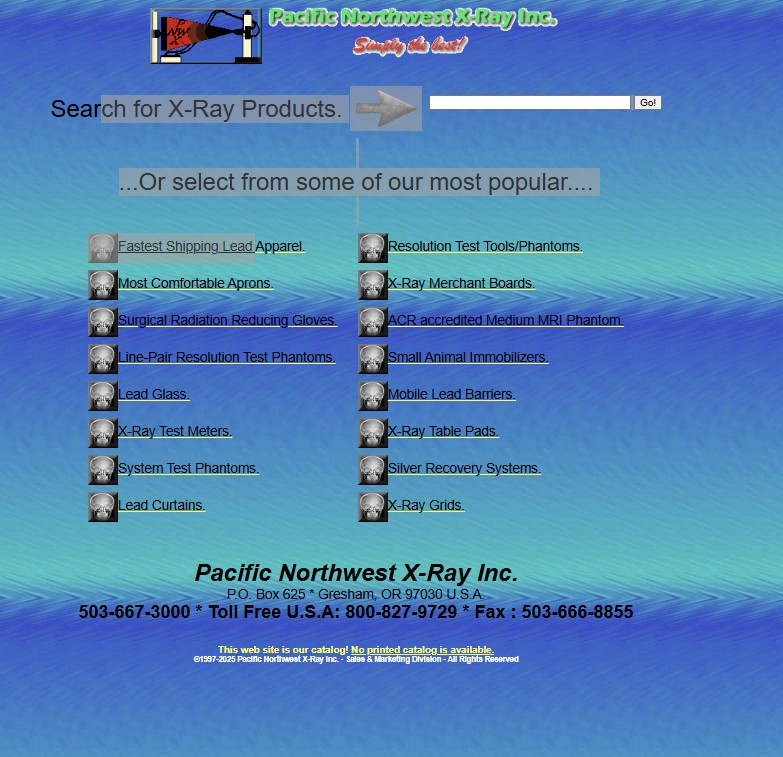

Website Evaluations
Stripe
Stripe is a payment processing platform. Its design is modern, intuitive, and follows strong design standards.
- Contrast: Excellent contrast between background and text makes everything easy to read.
- Repetition: Consistent color scheme, fonts, and layout across pages.
- Alignment: Content follows a clean, grid-based structure with perfect alignment.
- Proximity: Related content and call-to-actions are grouped logically and effectively.
Pacific Northwest X-Ray Inc.
This site feels outdated, with poor structure, design inconsistencies, and accessibility issues.
- Contrast: Weak contrast makes text difficult to read.
- Repetition: Inconsistent styles and lack of visual uniformity.
- Alignment: Many elements are misaligned or scattered.
- Proximity: Unrelated elements are too close, causing visual confusion.